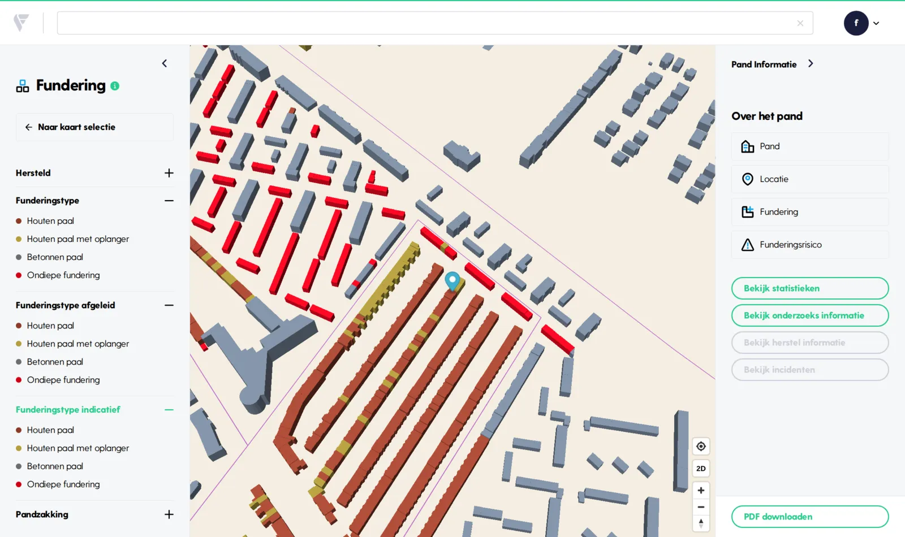
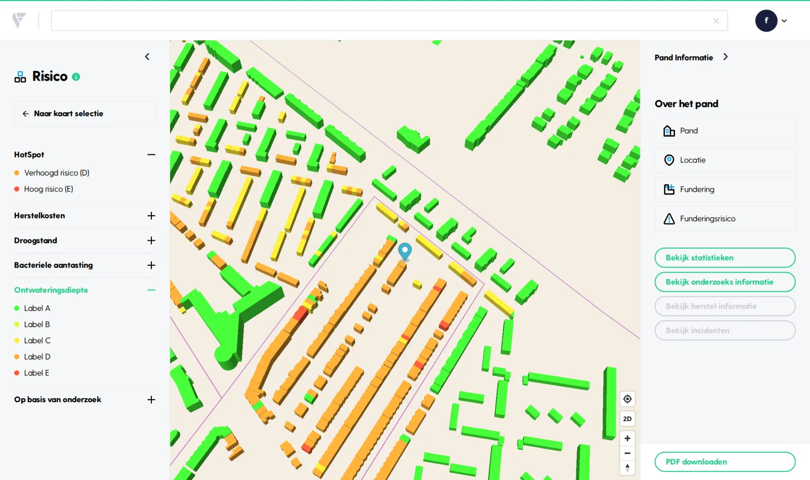
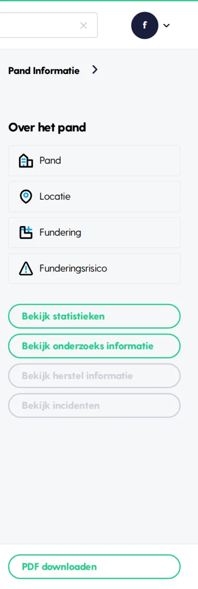
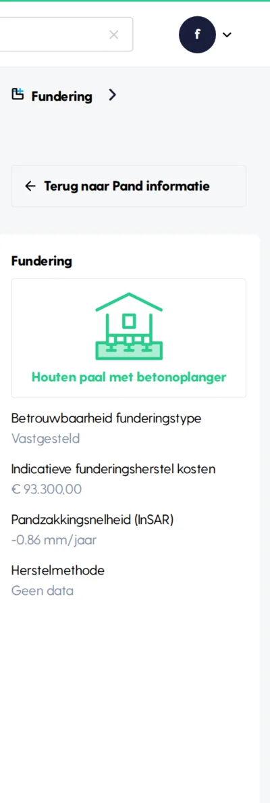
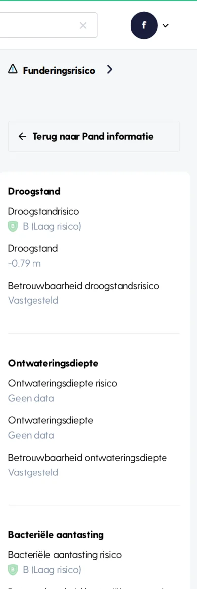
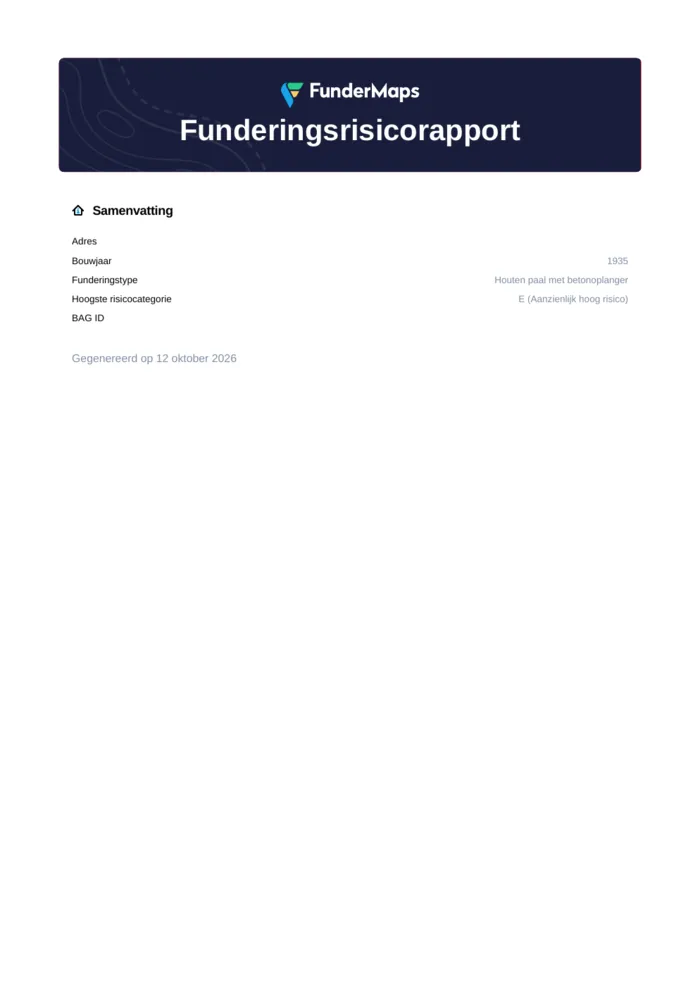
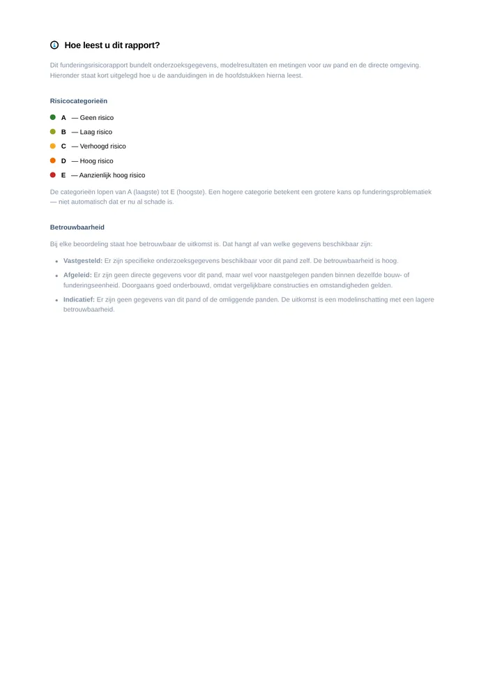
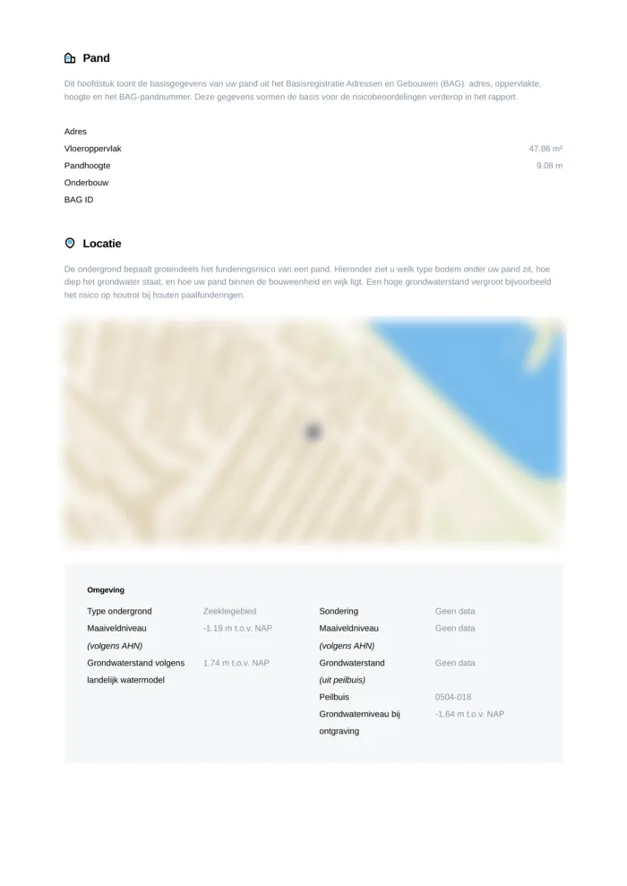
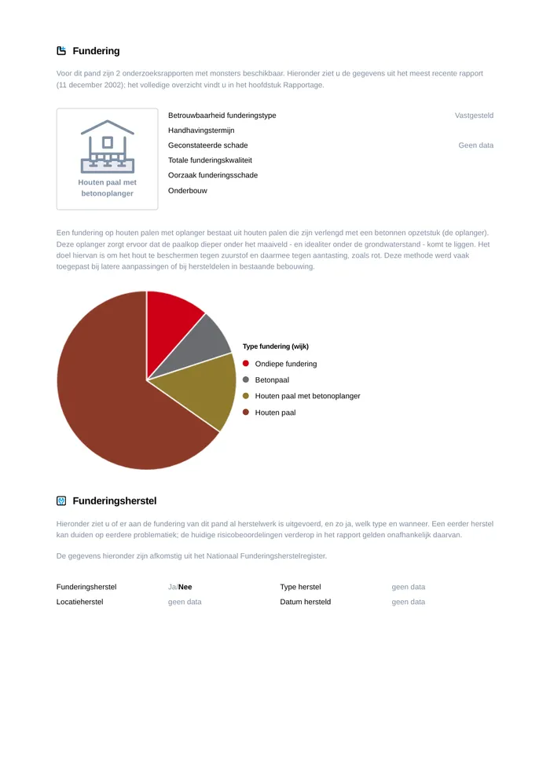

Funderingstype per pand
Zoek op adres of postcode en de kaart zoomt in op de buurt. Elk pand krijgt de kleur van zijn fundering: houten paal, houten paal met oplanger, betonnen paal of ondiepe fundering. De legenda maakt onderscheid tussen een vastgesteld funderingstype (uit onderzoek), een afgeleid type (uit vergelijkbare panden in dezelfde bouwkundige eenheid) en een indicatief type (een modelinschatting).

Funderingsrisico in één oogopslag
Wissel naar de kaart Risico en zet de laag aan die u wilt zien: droogstand, ontwateringsdiepte, bacteriële aantasting, herstelkosten of de risico’s op basis van onderzoek. Elk pand krijgt een label van A (geen risico) tot en met E (aanzienlijk hoog risico). Zo ziet u direct waar in de buurt de aandacht nodig is.

Alles over één pand in de zijbalk
Klik op een pand en de zijbalk opent. Daar staan de pandgegevens, de locatie, de fundering (type, betrouwbaarheid, indicatieve herstelkosten en pandzakking) en de funderingsrisico’s met hun betrouwbaarheid. Is er onderzoek of herstel bekend, dan bekijkt u dat hier ook. Onderaan downloadt u het rapport.



Het funderingsrisicorapport als PDF
Met “PDF downloaden” maakt FunderMaps direct een funderingsrisicorapport van het pand. Het rapport bundelt de samenvatting, een leeswijzer voor de risicocategorieën en de betrouwbaarheid, de pandgegevens, de locatie en ondergrond, de fundering, bekend herstel en de afzonderlijke funderingsrisico’s. Klaar om te delen of bij een dossier te voegen.




Adres en pandnummer zijn in deze rondleiding onherkenbaar gemaakt.